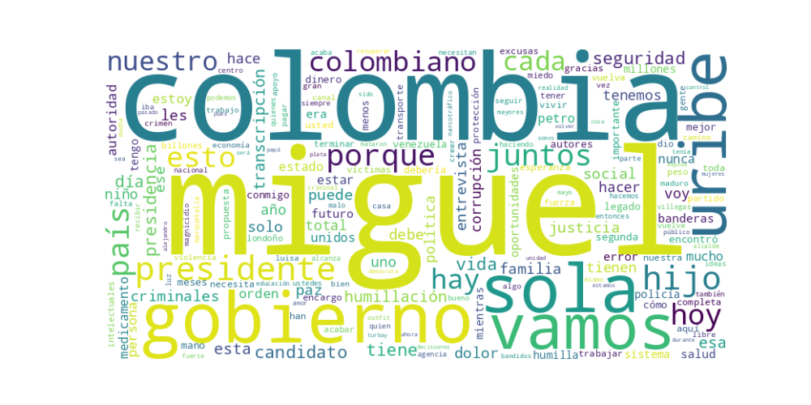

Seguidores: 138,275
ANÁLISIS DE COMUNICACIÓN - CANDIDATO PRESIDENCIAL MIGUEL URIBE LONDOÑO
1. Perfil de Comunicación: Miguel Uribe Londoño emplea un estilo de comunicación predominantemente emocional y testimonial, fundamentado en su experiencia personal como víctima de la violencia. Su tono oscila entre lo coloquial y cercano, especialmente al compartir anécdotas familiares, y lo enérgico y confrontacional al criticar al gobierno y a sus adversarios. Utiliza un lenguaje popular y accesible, con pocos tecnicismos, buscando conectar con el ciudadano común a través de historias de dolor, resiliencia y promesas concretas. Se presenta como un "padre de familia" que asume una misión, lo que humaniza su figura y genera identificación.
2. Temas Principales:
3. Tono y Sentimiento Dominante: El tono general es crítico, confrontacional y emocionalmente cargado, con una base de dolor transformado en propósito. Es predominantemente pesimista respecto al presente (describiendo un país en crisis, humillado e inseguro) pero esperanzador y propositivo respecto al futuro que promete construir. Hay un sentimiento de indignación moral dirigido hacia el gobierno actual, los grupos criminales y la corrupción.
4. Palabras Clave de Poder: * "Una sola Colombia" / "Por una sola Colombia": Eslogan central que promete unidad. * "Seguridad, Orden, Autoridad y Justicia Social": Eslogan de gobierno, repetido como una fórmula completa. * "Humillación" / "Humilla": Término utilizado estratégicamente para describir casi todos los problemas (costo de vida, informalidad, salud, corrupción), generando identificación emocional. * "Conmigo vuelve..." / "De eso me encargo yo": Frases que enfatizan liderazgo personal y capacidad de solución. * "Legado de Miguel" / "Bandera de Miguel": Vinculación constante con su hijo para dar legitimidad y propósito moral a su campaña. * "Paz Total": Siempre entre comillas y asociado a negativamente a "impunidad", "criminales" y la muerte de su hijo.
5. Conclusión Estratégica: La estrategia de comunicación de Miguel Uribe Londoño se basa en una narrativa personal trágica convertida en misión nacional. Se dirige a un electorado desencantado, que sufre la economía diaria y teme por su seguridad, ofreciéndose no solo como un político, sino como un padre dolido que busca justicia y orden. Su discurso busca evocar identificación a través del dolor compartido ("humillación") y la esperanza de un retorno a un país seguro y unido. Posiciona su candidatura como un deber moral (honrar a su hijo) más que una ambición política, atacando ferozmente al gobierno de Petro y distanciándose de la "vieja política" representada por Álvaro Uribe. En esencia, vende una restauración del orden basada en la autoridad y una economía familiar protegida, todo envuelto en un poderoso relato de resiliencia personal y legado familiar.
1. Resumen del Patrón de Éxito: El contenido más exitoso del candidato se articula sobre una fusión entre tragedia personal y propuesta política, donde el dolor familiar (el asesinato de su hijo Miguel) se transforma en el motor único y legítimo de su campaña. No es un político tradicional que habla de seguridad; es un padre dolido que promete venganza y redención nacional. El patrón es emotivo-vengativo: cada problema nacional (inseguridad, impunidad) se refuerza con su trauma personal, creando una narrativa imbatible de autenticidad y determinación.
2. Tácticas de Comunicación Clave: * Legitimidad por Dolor y Sacrificio: El asesinato de su hijo no es solo una tragedia, es su credencial política suprema. Se presenta no como un candidato que "promete" seguridad, sino como la única persona con la autoridad moral y el derecho a exigirla, porque pagó el precio máximo. Su sufrimiento lo exonera de la frialdad política tradicional. * Definición Binaria y Confrontacional del Mundo: Divide la realidad en "los buenos" (él, su hijo mártir, los colombianos de bien, la fuerza pública) vs. "los malos" (delincuentes, guerrillas, el gobierno actual que "protege" a los criminales). Este marco simple y emocional es altamente efectivo en redes sociales, eliminando matices. * Apelación a la Protección Paternal: Su eslogan "Hijo amado, yo me haré cargo" es una obra maestra retórica. Traslada su rol de padre (fallido en proteger a su hijo) al de "Padre de la Nación" que protegerá a sus ciudadanos-hijos. Evoca simultáneamente compasión (por su pérdida) y la promesa de un protector fuerte. * Uso Ritual del Nombre y el Legado: La repetición constante de "Miguel" (su hijo) y "Miguel Presidente" (él) entrelaza inextricablemente ambas figuras. Cada mención a su candidatura es un homenaje, haciendo que oponerse a él sea percibido como irrespetar la memoria de un mártir.
3. Temas de Mayor Resonancia: * Seguridad y Orden Público: El tema absoluto y central. No se discute con datos, sino con el miedo crudo y la promesa de "mano firme". * Victimización e Impunidad: Se posiciona como la voz principal de todas las víctimas de la violencia, conectando su dolor personal con el colectivo. * Respaldo Incondicional a la Fuerza Pública: Promete restaurar el honor y darles "licencia para actuar" a policías y soldados, un mensaje claro de línea dura. * Memoria de su Hijo Miguel: Cualquier contenido que profundice en el duelo, la figura del hijo o la búsqueda de justicia por su caso genera una interacción intensa y emotiva.
4. Perfil de la Audiencia Implícita: El discurso apela a una audiencia emocionalmente movilizada, que prioriza sentimientos sobre análisis técnico. Habla principalmente a: * El votante de la "ira justiciera": Personas frustradas con la inseguridad, que anhelan soluciones simples y contundentes, y rechazan discursos complejos o conciliadores. * La base conservadora y de derecha tradicional, pero reconectada a través de la emoción y el martirio, no solo de la ideología. * Víctimas de la violencia y sus círculos familiares, que se sienten identificados con su narrativa de dolor e impunidad. * Personas que valoran la "autenticidad" por encima de la experiencia, viendo en su tragedia una garantía de que no es "un político más".
5. Conclusión Estratégica: La clave fundamental del poder de su discurso es la invencibilidad retórica que le otorga el estatus de víctima-padre-mártir. Ha logrado una alquimia política donde la crítica a su programa se puede enmarcar fácilmente como una falta de sensibilidad hacia su dolor personal. Esto lo diferencia radicalmente del discurso político tradicional: no debate políticas públicas; ofrece una cruzada moral de redención nacional, donde votar por él no es una opción política, sino un acto de solidaridad con su familia y, por extensión, con todas las víctimas. Su fuerza no está en lo que dice que hará, sino en quién es (el padre de Miguel) y por qué dice que lo hará (para vengar y honrar a su hijo). Es una narrativa cerrada, emocionalmente potente y muy difícil de contrarrestar con argumentos racionales o técnicos.

Caption: Miguel cuanta falta me haces… Te recuerdo con orgullo, con gusto, con emoción, tu luz será eterna.
Likes: 5,752 | Comentarios: 325 | Reproducciones: 48,310
Ver en InstagramCaption: Hoy a los delincuentes no se les persigue, se les protege. La inseguridad crece mientras los colombianos temen por sus vidas, sus trabajos o sus negocios. Necesitamos un presidente que esté del lado de los buenos y mano firme con los malos. Hijo amado, ¡yo me haré cargo! #MiguelPresidente #PorUnaSolaColombia
Likes: 2,259 | Comentarios: 137 | Reproducciones: 20,146
Ver en InstagramCaption: ¡La autoridad no se negocia! 🇨🇴 El respaldo a nuestros soldados y policías será total. Vamos a devolverles el respeto y las condiciones que merecen por defender nuestra libertad. Conmigo vuelve la seguridad. #MiguelPresidente #PorUnaSolaColombia #SeguridadYOrden #FuerzaPública
Likes: 581 | Comentarios: 41 | Reproducciones: 5,500
Ver en Instagram